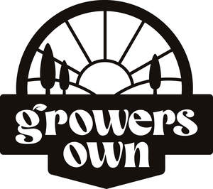

Trade Mark Journal No.2025/019 9 May 2025
UK00004190140 16 April 2025 (6,8,12,17,20,21,22)
Mark 1
Mark 2

- Class 6
- Wire; Securing wire for plants; Metal garden stakes; Metal wire cloches for protecting plants; Stakes of metal for plants or trees; Baskets of metal.
- Class 8
- Secateurs; Pruning shears; Pruning scissors; Gardening shears; Shears; Tree pruners; Gardening scissors; Loppers [hand tools]; Tree pruners [hand tools]; Pruners [hand tools]; Blades for shears; Metal-cutting scissors [tin shears]; Pruning saws [hand tools]; Pruning saws [hand-operated]; Trowels [gardening]; Gardening trowels; Scissors; Pocket shears; Multipurpose shears; Multi-purpose shears; Hedge trimmers [hand-operated tools]; Trowels; Shears [hand operated tools]; Weeding forks [hand tools]; Weeding forks being hand tools; Hedge cutters [hand-operated tools]; Hand-operated tools for gardening; Garden tools, hand-operated; Sprayers [hand-operated tool] for garden use in spraying weedkillers.
- Class 12
- Wheelbarrows; Carts for garden hoses; Wheel barrows; Trolly [mobile cart]; Trolleys; Trolleys [mobile carts].
- Class 17
- Garden hoses; Water hoses for garden use; Plastic sheeting for preventing weed growth; Polyethylene sheets for laying on the ground to suppress weeds.
- Class 20
- Bamboo canes; Non-metal garden stakes; Stakes, not of metal, for plants or trees; Stakes for plants or trees; Containers made of plastic for compost; Compost bins of plastic; Plastic plant markers; Hanging baskets [flower] of non-metallic materials; Hanging storage racks [furniture]; Decorative baskets made of wicker; Moses baskets; Wicker baskets; Manure baskets [non-metallic]; Decorative baskets made of straw.
- Class 21
- Plant pots; Pots for plants; Bases for plant pots; Flower pots; Pots (Flower -); Pots; Plastic lids for plant pots; Repotting containers for plants; Pots for flowers; Plant baskets; Saucers for flower pots; Plant syringes; Pot plant support sticks; Syringes for watering flowers and plants; Sprinklers for watering flowers and plants; Plant holders; Holders for plants; Flower pot holders; Planters of plastic; Water syringes for spraying plants; Plastic buckets; Holders for flowers and plants [flower arranging]; Brushes for connection to garden hose; Garden hose sprayers; Sprayer wands for garden hoses; Garden syringes; Garden hose spray nozzles; Sprayer nozzles for garden hoses; Spray nozzles for garden hoses; Flower baskets; Wastepaper baskets; Plastic bath racks [caddies].
- Class 22
- Twine; Baling twine; Garden nets; Twine for nets; Plastic ties for garden use; Plastic ties for home or garden use; Plastic-covered mesh fabric bags for growing plants and trees; Cords for hanging pictures; Netting for protection against birds and insects; Nets for protective use in gardening.
CREATION WHOLESALE LIMITED